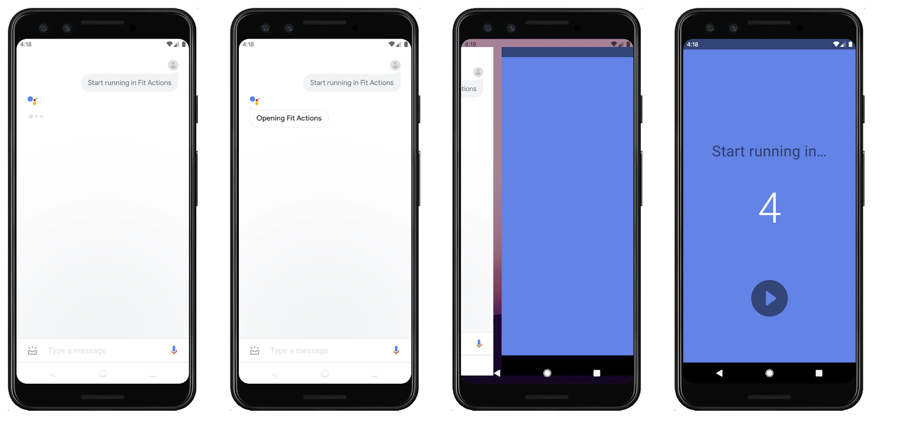
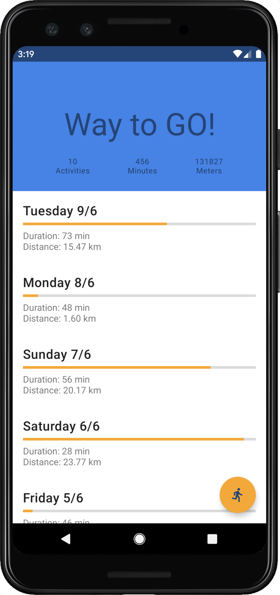
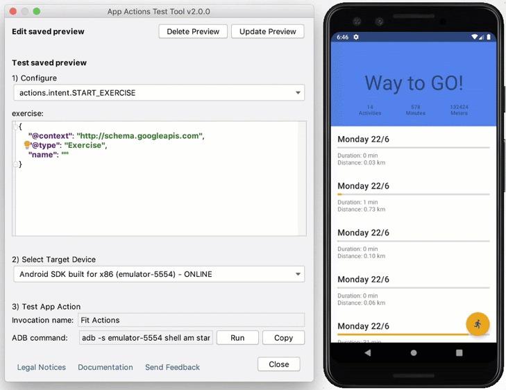

App Actionsは、ユーザーがGoogleアシスタントから特定のアプリの機能を直接起動できるようにすることで、Androidアプリの範囲を拡大するのに役立ちます。App Actionsはアプリのディープリンクの上に構築され、ユーザーがすでに知っている使用したい機能にアクセスするためのより多くの方法を提供します。
Android開発者は、利用可能な組み込みインテントの1つを実装して、ユーザーがより速く、よりスムーズに作業を行えるようにすることができます。 ユースケースをサポートする組み込みのインテントがない場合は、公開されているIssue Trackerで機能リクエストを提出できます。
このコードラボでは、Actions on Googleで開発するための中級レベルの概念について説明します。 このコードラボをフォローするには、Androidアプリの開発とディープリンクの処理の経験が必要です。 Androidについてまったく初めての開発者は、代わりに、Android developers fundamentalsのコードラボの1つから始めると良いかもしれません。
このコードラボでは、サンプルのフィットネスAndroidアプリに以下の機能を追加します。

続ける前に、あなたの環境に次のツールがあることを確認してください。
このコードラボで使用されているコードを理解するには、必須ではありませんが、KotlinとXMLに精通していることが推奨されます。
このコードラボのApp Actionsは、en-US、en-GB、en-CA、en-IN、en-BE、en-SG、en-AUのロケールのGoogleアシスタント言語でのみ正常にトリガーされます。 このコードラボのAndroidアプリで使用される組み込みインテントでは、他の言語とロケールでは使用できません。
このコードラボでは、Androidデバイスを使用してApp Actionsをテストします。 物理的なAndroidデバイスでテストする前に、ローカルの開発マシンに接続されていることを確認してください。 デバイス上でGoogleアプリにサインインし、同じGoogleアカウントを使用してAndroid Studioにサインインする必要があります。
App Actionsは、GoogleアシスタントからAndroidアプリへとユーザーをつなげます。 しかし、それはどのように機能するのでしょうか？
ユーザーがアシスタントにアプリを使用することを指示すると、アシスタントは、actions.xmlファイルからアプリに登録されているApp Actionsを探します。App Actionsは、組み込みインテント（意味的にはアプリの機能を表します）と（ディープリンクテンプレートのような）フルフィルメントの手順を組み合わせて使用することが、このファイルに記述されます。
actions.xmlファイルには、各アプリアクションに関する次の情報が含まれます。
ユーザーからアシスタントに提供された情報に基づいて、App Actionsはインテントを実現するためのディープリンクを作成します。 次に、Androidアクティビティは、提供されたディープリンクをフィルタリングして処理し、ユーザーに必要な機能を提供します。
全体としては、アシスタントはユーザーのクエリに応答してアプリの機能を呼び出すことで、結果としてユーザ体験となります。
このコードラボの出発点は、サンプルのフィットネスAndroidアプリです。 そのアプリでは、ユーザーはエクササイズタイマーを開始したり停止したり、運動ルーチンに関する情報を表示したりできます。
このコードラボのベースファイルを取得するには、次のコマンドを実行してGitHubリポジトリをローカルにクローンしてきます:
git clone --branch codelab-start https://github.com/actions-on-google/appactions-fitness-kotlin.git--branch codelab-start オプションを使用すると、このコードラボの開始時点でのブランチがチェックアウトされます。
リポジトリをクローンしてきたら、Android Studioで開きます。
フィットネスアプリにApp Actionsを実装する際に、Android Studioプラグインを使用して入力をテストする必要があります。 このプラグインは後でコードラボでインストールしますが、アプリがGoogle Play Consoleのプロジェクトにアップロードされるまで、テストツールを使用できません。
コンソールでサンプルフィットネスアプリのバージョンを一意にするには、app/build.gradle ファイルのAndroidのdefault configにセットされているアプリケーションIDを変更します:
android {
...
defaultConfig {
applicationId "com.MYUNIQUENAME.android.fitactions"
...
}
}applicationIdの「MYUNIQUENAME」をあなたの固有のものに置き換えます。 これにより、パッケージ名が変更され、後でPlay Consoleにアップロードするときに「パッケージ名の重複」の問題が発生しなくなります。
アプリに他の変更を加える前に、サンプルアプリで何ができるかを理解しておくと役立ちます。 エミュレーターでアプリを実行してみます:
エミュレータは物理デバイスと同じように開始およびブートするため、コンピュータの速度によっては時間がかかる場合があります。 アプリがビルドされ、エミュレーターの準備ができると、Android Studioはアプリをエミュレーターにアップロードして実行します。

アプリを簡単に動かしてみて何ができるかを確認します。 実行アイコンをタップするとエクササイズタイマーが開始し、Xアイコンをタップするとタイマーが停止します。 これらは、AppActionsで有効にする2つのタスクです。
テストデバイスで上記の手順を繰り返し、アプリが両方の画面で同じように機能することを確認します。 ハンズオンを続ける前に、ホームボタンを長押しして、アシスタントが物理デバイスで設定されていることを確認してください。 まだサインインしていない場合は、テストデバイスでアシスタントにサインインする必要があります。
Android Studioでアプリをビルドし、内部リリースとしてPlay Consoleにアップロードします。 アプリのアップロードは、Android Studioで App Actions のテストツールを使用するための前提条件です。
Android Studioで、次の手順を実行します :
Google Play Consoleで、作成したApp Bundleを新しいアプリとしてアップロードします:
app/releaseディレクトリにあります）。アプリがPlay Consoleに正常にアップロードされたので、Android Studioに戻ります。
アシスタントはアプリに登録された App Actions を認識する必要があるため、何らかの方法でその情報を伝達する必要があります。 開発時には、"App Actions test tool" Android Studioプラグインを使用してそれを行います。
まだプラグインが入っていない場合は、インストールします:
App Actionsを設定するには、Androidアプリによって実行される機能に関連付けする組み込みインテントを見つける必要があります。 組み込みインテントのリファレンスページには、Googleアシスタントで利用可能な組み込みインテントの一覧があります。それぞれのインテントは、ユーザーが実行しようとしているタスクを表現する一般的な方法をモデル化しています。
リファレンスでは、App Actionsによって実行できる組み込みインテントがカテゴリと機能ごとにグループ化されています。 あなたのユースケースをサポートする組み込みインテントがない場合は、公開されているIssue Trackerで機能のリクエストを投稿してください。
このコードラボでは、ユーザーを支援するために2つの組み込みインテントを実装しています:
actions.intent.START_EXERCISE)actions.intent.STOP_EXERCISE)このプロセスでは、ディープリンクを設定し、アプリのXMLリソースで App Actions を定義して、この2つを接続します。
ディープリンクは、ユーザーをコンテンツに直接導き、情報をインテントからプロセス内のアプリに渡します。 デフォルトでは、アシスタントはディープリンクを使用してインテントを実行し、パラメーターをアプリに渡します。 このコードラボでは、パラメータを受け取るディープリンクは "fit-actions.firebaseapp.com" ホストと "https" スキームを使用します。
Androidマニフェストファイルで、メインアクティビティのインテントフィルターを追加して、サポートされるディープリンクを定義します:
<activity android:name="com.devrel.android.fitactions.FitMainActivity" ...>
... // Other intent filters
<!-- Define your supported deeplinks -->
<intent-filter
android:autoVerify="true"
tools:targetApi="m">
<action android:name="android.intent.action.VIEW" />
<category android:name="android.intent.category.DEFAULT" />
<category android:name="android.intent.category.BROWSABLE" />
<data
android:host="fit-actions.firebaseapp.com"
android:scheme="https" />
</intent-filter>
</activity>次に、メインアクティビティに次の関数を追加して、パラメータを受け取るディープリンクの動作を定義します:
private fun handleDeepLink(data: Uri?) {
when (data?.path) {
DeepLink.START -> {
// Get the parameter defined as "exerciseType" and add it to the fragment arguments
val exerciseType = data.getQueryParameter(DeepLink.Params.ACTIVITY_TYPE).orEmpty()
val type = FitActivity.Type.find(exerciseType)
val arguments = Bundle().apply {
putSerializable(FitTrackingFragment.PARAM_TYPE, type)
}
updateView(FitTrackingFragment::class.java, arguments)
}
DeepLink.STOP -> {
// Stop the tracking service if any and return to home screen.
stopService(Intent(this, FitTrackingService::class.java))
updateView(FitStatsFragment::class.java)
}
else -> {
// Path is not supported or invalid, start normal flow.
showDefaultView()
}
}
}DeepLink.START および DeepLink.STOP は、サンプルアプリで定数として定義されており、ディープリンクの対応するパスに関連付けされます。 DeepLink.START の場合、ハンドラーはディープリンクのURLパラメーターを介して受け取るパラメータも取得します。
次に、同じファイルの handleIntent 関数を更新して、ディープリンクハンドラーを使用します:
private fun Intent.handleIntent() {
when (action) {
// When the action is triggered by a deep-link, Intent.ACTION_VIEW will be used
Intent.ACTION_VIEW -> handleDeepLink(data)
// Otherwise start the app as you would normally do.
else -> showDefaultView()
}
}これで、アプリが "https://fit-actions.firebaseapp.com/start" 形式のインテントをフィルタリングすると、エクササイズタイマーが開始されます。
Android Debug Bridge (adb) に慣れている場合は、実行中のデバイスでディープリンクハンドラーをテストできます。 これを行うには、デバイスでアプリを更新し、次のシェルコマンドを使用します。
adb shell am start -a android.intent.action.VIEW -d "https://fit-actions.firebaseapp.com/start"App Actions を機能させるには、アシスタントがアプリに登録されている App Actions を知る必要があります。 この情報を伝えるために、actions.xml ファイルをAndroidパッケージの一部としてPlay Consoleにアップロードします。
新しいリソースを作成し、それを参照するにはいくつかの手順を実行するだけです:
actions.xml を作成します。AndroidManifest.xml の actions.xml ファイルへの参照を追加します。アプリでサポートされているAppActionsを示すには、app.src/main/res/xml に、actions.xml という名前の新しいXMLファイルを作成します。
Android Studioで、次の手順を実行します:
actions.xml ファイルを作成し、その参照を AndroidManifest.xml に追加します。新しいファイルが作成されたら、actions.xml の内容を次のコードに置き換えます:
<?xml version="1.0" encoding="utf-8"?>
<actions>
<action intentName="actions.intent.START_EXERCISE">
<fulfillment urlTemplate="https://fit-actions.firebaseapp.com/start{?exerciseType}">
<parameter-mapping
intentParameter="exercise.name"
urlParameter="exerciseType" />
</fulfillment>
</action>
<action intentName="actions.intent.STOP_EXERCISE">
<fulfillment urlTemplate="https://fit-actions.firebaseapp.com/stop" />
</action>
</actions>上記のコードでは、<action>要素を使用して、アプリでエクササイズタイマーを開始および停止するためのApp Actionsを定義します。 intentName 属性は、App Actionsを使用して実行する2つの組み込みインテントに対応し、<fulfillment> 要素は、アプリを使用してアクションを実行する方法をアシスタントに指示します。
ここで、両方のアクションは、urlTemplate 属性を使用してディープリンクを作成することで実行されます。 URLテンプレートは、AndroidManifest.xmlファイルでディープリンク用に定義したホストとスキームを使用します。 各URLテンプレートのパスは、 handleDeepLink 関数（先にメインアクティビティに追加したもの）が指定するものに対応しています。
タイマーを開始するために、組み込みインテントの exercise.name パラメーターも、exerciseType URLパラメーターにマップする必要があることに注意してください。 これにより、ディープリンクハンドラーは、アシスタントからビジネスロジックの引数を取得できます。
前のステップで、Android Studioは AndroidManifest.xml 内の actions.xml ファイルへの参照を追加しました。 これを確認するには、Androidマニフェストで次の <meta-data> 要素を確認します:
<application>
...
<meta-data
android:name="com.google.android.actions"
android:resource="@xml/actions" />
</application>上記の <meta-data> 要素がマニフェストファイルにある場合は、App Actions のテストに進みます。
上記の <meta-data> 要素がマニフェストファイルにない場合は、追加します。
それでは、テストデバイスでApp Actionsを試してみましょう。
テストデバイスを接続し、テストツールを使用してApp Actionsをテストします:
App Actions test tool がApp Actionsのプレビューを作成または更新する場合、1つのGoogleアカウントに対してこれが行われ、定義されたApp Actionsが一時的に登録されます。 そのプレビューにより、アシスタントはアプリの本番バージョンをGoogle Play Consoleにデプロイする前にApp Actionsを認識できます。
テストツールがアプリの組み込みインテントを取得したら、インテントにパラメーター値を直接提供し、Android StudioからApp Actionsをトリガーできます。
別の方法として、デバイスのアシスタントアプリで直接呼び出し名を使用して、App Actionsを試すこともできます。 たとえば、 "Hey Google, start running in Fit Actions" と発声して、エクササイズタイマーを開始するApp Actionsを起動できます。
これで、Googleアシスタントを介してフィットネスアプリでエクササイズタイマーを開始および停止できるようになりましたが、特定のエクササイズのみが認識されることに気づいたかもしれません。"Start my swim in Fit Actions" や "Start hiking in Fit Actions" などのリクエストは、"Start unknown in ..." というテキストで始まるタイマーにつながります。
これは、サンプルアプリで現在サポートされているエクササイズタイプが "Running", "Cycling", "Walking" のみであるためです。 アプリを使用して他のエクササイズを記録したいユーザーに、より適切に対応するにはどうすればよいでしょうか？
このアプリでは、いくつかの方法で利用可能なエクササイズの数を増やすことができます:
actions.intent.START_EXERCISE組み込みインテントでサポートされるテキストフィールド値によって制限されます）より多くの種類のエクササイズをサポートすると、ユーザーが実行したいエクササイズに基づいて、アプリ内のより多くの経路に接続できます。 これはユーザーをサポートする1つの方法であり、アプリがさまざまなエクササイズに対してさまざまなタスクを実行できる場合は、これが正しい選択です。
フィットネスアプリの場合は、2つ目のオプションを使用して、アシスタントをすぐに使いやすくすることができます。 これを行うと、ユーザーは、サポートされている別のテキストフィールド値を含むクエリを使用してタイマーを開始できます。 このコードラボでは、インラインインベントリを使用して、"Start hiking" を "Start walking" のアプリ機能にマッピングします。
インラインインベントリは、アシスタントを使用してApp Actionsをトリガーするときにアプリがユーザーに含めることを期待する特定のエンティティを定義します。 actions.xml ファイルにインラインインベントリを追加して、ユーザーがサポートするオプションのリストを直接作成します。 インベントリ項目は <entity-set> 要素にグループ化され、アクションの定義はエンティティセットを参照して、それらをマッピングパラメータに使用できます。
前述のように、サンプルアプリには "Running", "Cycling", "Walking" をサポートする機能があります。 エンティティセットを作成し、actions.intent.START_EXERCISE で参照するため、アプリはディープリンクにエンティティ識別子のみを使用する必要があります:
<actions>
<action intentName="actions.intent.START_EXERCISE">
...
<!-- Map a parameter to an entity set reference -->
<parameter name="exercise.name">
<entity-set-reference entitySetId="ExerciseEntitySet" />
</parameter>
</action>
...
<!-- Define an inline inventory -->
<!-- This sample maps supported entities with the class FitActivity.Type -->
<entity-set entitySetId="ExerciseEntitySet">
<entity
name="@string/activity_running"
identifier="RUNNING" />
<entity
name="@string/activity_walking"
identifier="WALKING" />
<entity
name="@string/activity_hiking"
identifier="WALKING" />
<entity
name="@string/activity_cycling"
identifier="CYCLING" />
</entity-set>
</actions>インラインインベントリの各 <entity> 要素は、ユーザーのクエリに対する一意の一致を表します。 エンティティを使用すると、アシスタントは "Running", "Cycling", "Walking" などのサポートされている入力を区別できます。 別のアプリのメニューアイテムやサービスの場合と同様に、追加の構造化データを含めるときに特に役立ちます。文字列 "hiking" のエンティティを追加することで、ハイキング用に既に構築した機能をハイカーが利用できるようになります。
テストツールでプレビューを作成または更新すると、アプリに登録されている組み込みインテントがフェッチされます。 その後、パラメーター値をインテントに直接提供し、Android Studioから App Action をトリガーできます。
App Actions test tool でインベントリを試します:

これで、AndroidアプリにApp Actionsを追加するために必要なスキルを学ぶことができました。
ここから、フィットネスアプリをさらに改良してみることができます。 インスピレーションを与えるために、GitHubのリポジトリのマスターブランチにアプリの拡張バージョンを提供しています。 拡張バージョンでは、Androidスライスを使用して、アシスタントを通じてエクササイズ情報をさらに表示します。 また、本番用Androidアプリのアプリアクションのデプロイ要件も組み込まれています。
Actions on Googleの詳細については、次のリソースをご覧ください:
最後に、このフォームに記入して、コードラボの改善にご協力ください。 問題が発生した場合、手順を完了するためにさらに情報が必要な場合、またはすべてが順調に進んだ場合でもお知らせください。